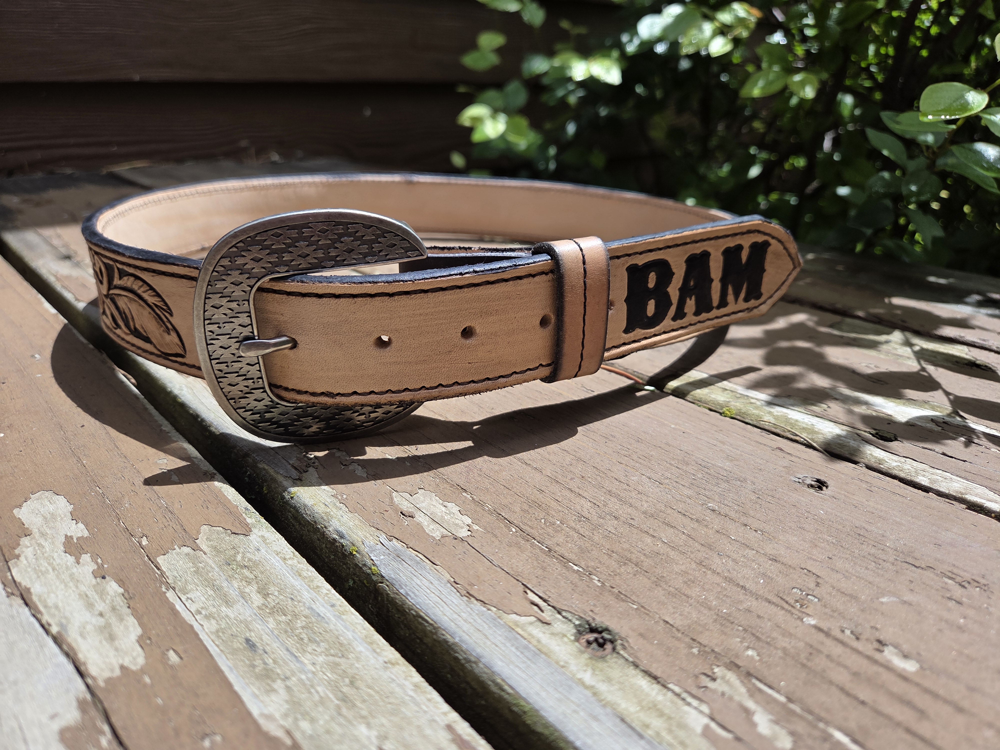
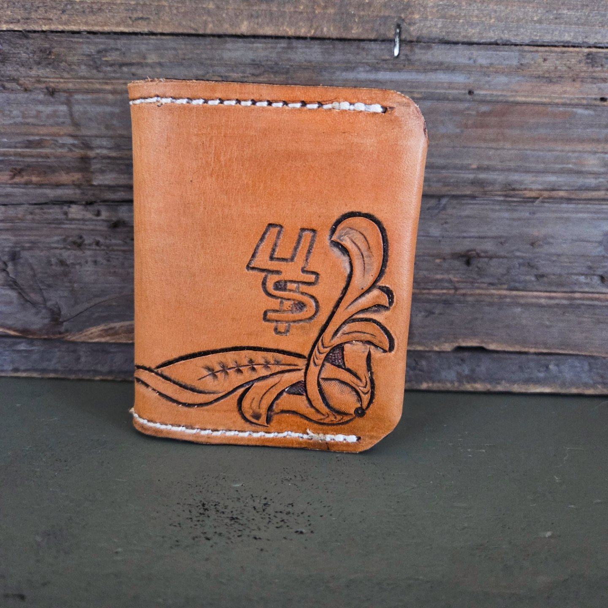

My Gallery
Leather Converse

This pair of converse was personalized and cut out specifically for this size of shoe.
Belts

Both of these belts were designed with initials to capture the personalization for each customer. The first picture shows a unique feathered design - while the other belt has purple flowers with original tooling.
Wallet


Wallets are common orders as they can be customized and built specific to the customers needs.
Wood Chisel Cover

These wood chisel covers were custom to these chisels. The stamping was added for extra style.